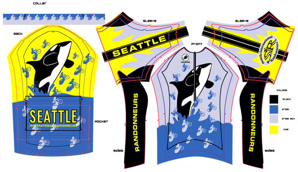
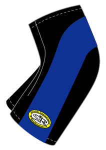

POLY JERSEY
We are placing an order for Castelli Squadra Team Gear SIR Club Jerseys. If you are interested, download the Order Form (PDF) and get your form and check to Ken Carter (see below).The design below by Andi Pihl is new for 2003! Artist designs, be assured that all sections will be sewn together!
|  | |
|  The Volta Shorts and Volta Bib Shorts design will be the same. The only pad to purchase with the Shorts, Bib Shorts and Bib Knickers will be Castelli's best, the Progetto Y2 / VT (womens, Progetto Y2 Donna VT) rated 5 star by Bicycling magazine. |
{kind=link}
For those people ordering the Poly Jerseys who wish to have them shipped directly to their home, please supply a mailing address and an additional $5.00 per item to be shipped. For those who will pick up their order, we will let you know when they will be available at Sammamish Valley Cycles. Deadline for ordering Jerseys/Shorts/Bibs will be January 29th, 2003. Please submit an order form for each order.Order Form (PDF)
See also Castelli Squadra Team Gear
SIR members can send order and check deposit (checks should be made out to SIR) to:
Ken Carter
8411 44th Ave W., Apt 6
Mukilteo, WA 98275
Phone: 1-425-353-9213 hm
kw.carter@verizon.net